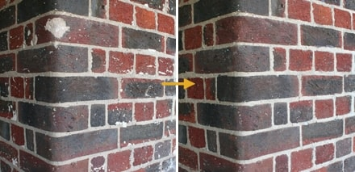
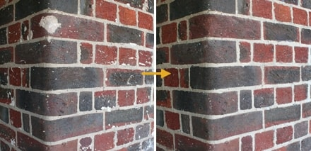
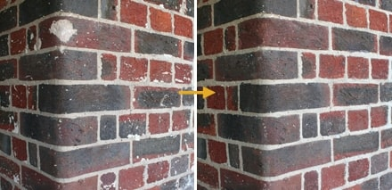

Far too often the wrong bricks are selected for extension works. The photos below demonstrate that even in extreme cases, corrections can be made.
Far too often the wrong bricks are selected for extension works. The photos below demonstrate that even in extreme cases, corrections can be made.

Examples of our stone & concrete tinting
Far too often the wrong bricks are selected for extension works. The photos below demonstrate that even in extreme cases, corrections can be made.
Far too often the wrong bricks are selected for extension works. The photos below demonstrate that even in extreme cases, corrections can be made.
Examples of our art projects
SHIBBOLETH AT THE TATE MODERN
It was an impressive sight to behold. Doris Salcedo created ‘Shibboleth’, a chasm that ran the entire length of the Turbine Hall with the aim of drawing attention to divisions in modern day society.
Ms Salcedo and Tate Modern did not wish to elaborate on how the piece was made, however it is sufficient to say that Brick Image Ltd were appointed to camouflage the new concrete used for the installation. Reactions from the press following the launch confirmed just how convincing our work had been....
Quote from the artist:
‘I am deeply thankful for the great job you did, your work was very professional and much more. I really appreciate your knowledge, creativity, and the great attitude you had throughout those long days.’


 
